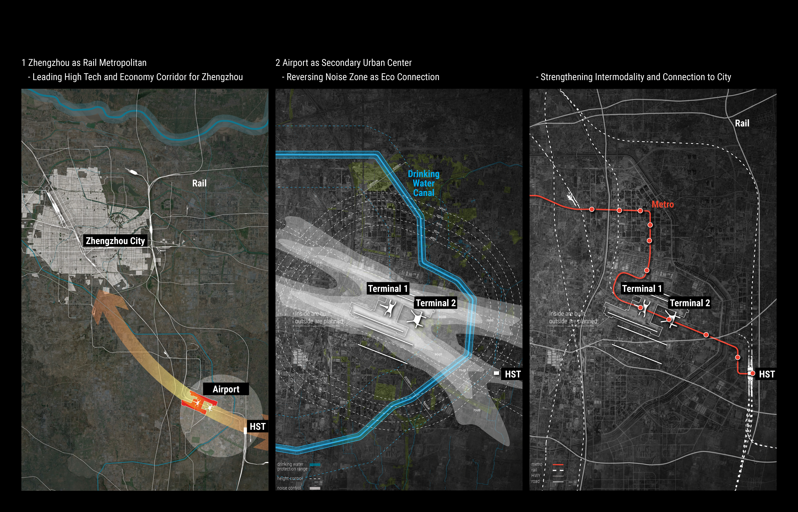
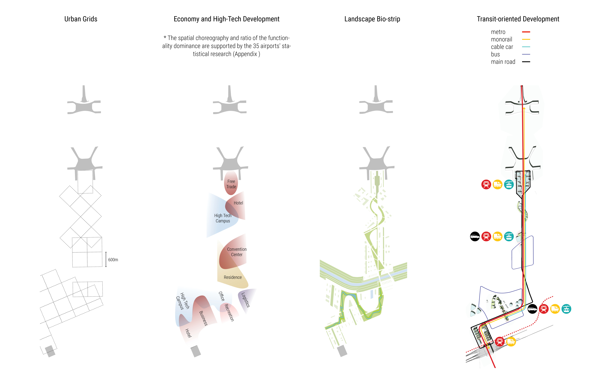
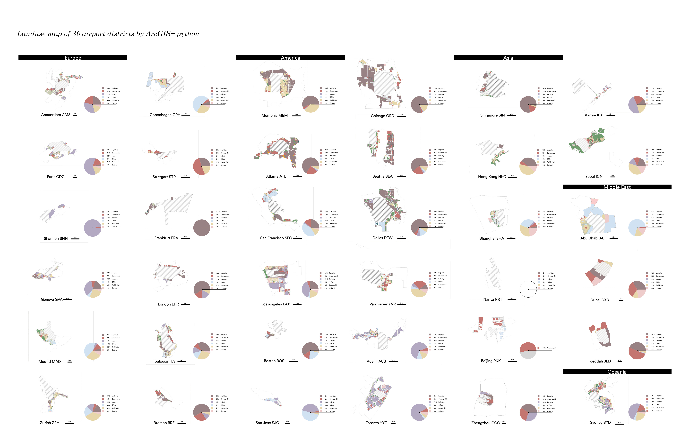

YUXIN YANG
Landscape and Urban Design
From Airport to HST Station: Bio Intermodality
Crosswind Data Center
Migration is Beautiful
Dredge Engine
Technology
IoT: Fiber Optic Breakwaters
CityScope Module: Kendall Life-Work Crescendo
Remote Sensing Sanyang Wetland
Adaptive Rocking Lattice Stool
Air-Pillow Attire for Haphephobia
Whim
CV
About


